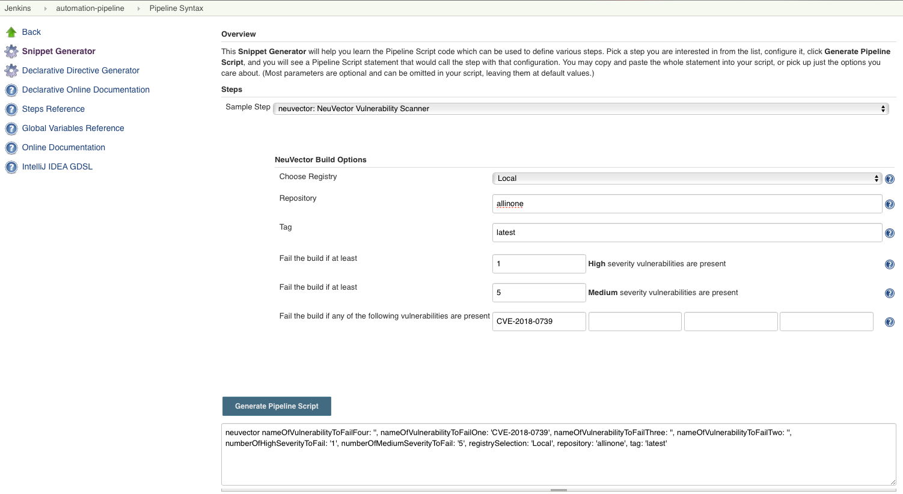

Jenkinsの詳細
Jenkinsプラグインの詳細設定
コンテナはアプリケーションをデプロイするための簡単で効率的な方法を提供します。しかし、コンテナイメージには、完全に制御できないオープンソースコードが含まれている可能性があります。オープンソースプロジェクトにおける多くの脆弱性が報告されており、イメージをスキャンして脆弱性情報を確認した後、これらの脆弱性を持つライブラリを使用するかどうかを決定することができます。
SUSE® Security 脆弱性スキャナーJenkinsプラグインは、Jenkinsでイメージが構築された後にイメージをスキャンできます。プラグインのソースと最新のドキュメントは、 こちらのSUSE® Security GitHubページで見つけることができます。
プラグインは2つのスキャンモードをサポートしています。最初は「コントローラー＆スキャナー」モードです。2番目はスタンドアロンのスキャナーモードです。プロジェクト設定ページでスキャンモードを選択できます。デフォルトでは、「コントローラー＆スキャナー」モードが使用されます。
「コントローラー＆スキャナー」モードでは、ネットワーク内にSUSE® Securityコントローラーとスキャナーをデプロイする必要があります。ローカルイメージ（Jenkinsマシン上のイメージ）をスキャンするには、「コントローラー＆スキャナー」がイメージが存在する同じノードにインストールされている必要があります。
スタンドアロンのスキャナーモードでは、DockerランタイムがJenkinsと同じホストにインストールされている必要があります。また、jenkinsユーザーをdockerグループに追加してください。
sudo usermod -aG docker jenkinsJenkinsプラグインのインストール
まず、ブラウザでJenkinsにアクセスしてSUSE® Securityプラグインを検索してください。これは以下にあります:
→ Jenkinsの管理 → プラグインの管理 → 利用可能 → フィルター → 検索 SUSE® Security Vulnerability Scanner →
それを選択して、`install without restart.`をクリックします。
まだ行っていない場合は、Jenkinsサーバーからアクセス可能なホストにSUSE® Securityコントローラーとスキャナーコンテナをデプロイしてください。必要に応じて、Jenkinsと同じサーバー上に配置できます。コントローラーが実行されているホストのIPアドレスをメモしておいてください。注意:デフォルトのREST APIポートは10443です。このポートは、Kubernetesのサービスを介してAllinoneまたはコントローラーを通じて公開する必要があります。または、Dockerの実行またはコンポーズファイルでポートマップ（例：- 10443:10443）を使用します。
さらに、コントローラーに接続するように構成されたSUSE® Securityスキャナーコンテナがスタンドアロンでデプロイされていることを確認してください（コントローラーを使用している場合）。
イメージスキャンには、ローカルスキャンとレジストリスキャンの2つのシナリオがあります。
-
ローカルイメージスキャン。ローカルイメージをスキャンするためにプラグインを使用する場合（レジストリにプッシュする前に）、コントローラー/スキャナーと同じホストでスキャンするか、リモートホストのDockerエンジンにアクセスするようにスキャナーを構成できます。
-
レジストリイメージスキャン。レジストリイメージをスキャンするためにプラグインを使用する場合（レジストリにプッシュした後、Jenkinsビルドプロセスの一部として）、SUSE® Securityスキャナーは、レジストリ、SUSE® Securityスキャナー、およびJenkins間に接続性のあるネットワーク内の任意のノードにインストールできます。
Jenkinsのグローバル設定
プラグインをインストールした後、グローバル設定ページ（Jenkins ‘Configure System’）で'`SUSE® Security Vulnerability Scanner’セクションを見つけてください。SUSE® SecurityコントローラーのIP、ポート、ユーザー名、およびパスワードの値を入力してください。値を検証するために'`Test Connection’ボタンをクリックできます。'`Connection Success’またはエラーメッセージが表示されます。
タイムアウト分の値は、入力された時間内にビルドステップを終了します。デフォルト値の0は、タイムアウトが発生しないことを意味します。
プロジェクトで使用するレジストリの値を入力するには、'`Add Registry’をクリックしてください。ローカルイメージのみをスキャンする場合、ここにレジストリを追加する必要はありません。
シナリオ1：ローカルイメージスキャンのためのグローバル設定の例

シナリオ2：レジストリイメージスキャンのためのグローバル設定の例
グローバルレジストリ設定については、ローカルの指示に従った後、以下のようにレジストリの詳細を追加してください。

スタンドアロンスキャナー
スタンドアロンモードでJenkinsスキャンを実行することは、パイプライン内のイメージの脆弱性をスキャンするための軽量な方法です。スキャナーは動的に呼び出され、コントローラーのセットアップをインストールする必要はありません。これは、イメージがレジストリにプッシュされる前にスキャンする際に特に便利です。同時に実行できるスキャンタスクの数に制限はありません。
スタンドアロンモードで脆弱性スキャンを実行するには、Jenkinsプラグインがエージェントが実行されているホストにスキャナーイメージをプルする必要があるため、SUSE® SecurityスキャナーレジストリURL、イメージリポジトリ、および必要に応じた資格情報をSUSE® Securityプラグイン設定ページに入力してください。
スキャン結果はコントローラーに送信され、Admission Control機能で利用されることもできます。この場合、コントローラーのセットアップが必要であり、SUSE® Securityプラグイン設定ページでコントローラーへの接続方法を指定する必要があります。
プロジェクト設定
プロジェクトで、「SUSE® Security 脆弱性スキャナー」プラグインを「ビルドステップを追加」メニューのドロップダウンから選択します。スタンドアロンスキャナーでスキャンを行いたい場合は、「スタンドアロンスキャナーでスキャン」チェックボックスをオンにします。デフォルトでは、「コントローラー＆スキャナー」モードを使用してスキャンを行います。
ローカルまたは、グローバル設定で入力したニックネームのレジストリ名を選択します。スキャンするリポジトリとイメージタグ名を入力します。リポジトリやタグのために、Jenkinsのデフォルト環境変数（例：$JOB_NAME、$BUILD_TAG、$BUILD_NUMBER）を選択できます。ビルドを失敗させるために、高または中の脆弱性の数と、存在する脆弱性の名前を入力します。
ビルドが完了すると、SUSE® Security レポートが生成されます。スキャンの詳細とエラーが表示されます。
シナリオ 1: ローカル設定の例

シナリオ 2: レジストリ設定の例

Jenkinsパイプライン
Jenkins パイプラインプロジェクトでは、自分のパイプラインスクリプトを直接記述するか、パイプラインスタイルのタスクに不慣れな場合は、'`pipeline syntax’をクリックしてスクリプトを生成します。

ドロップダウンからSUSE® Security 脆弱性スキャナーを選択し、設定してスクリプトを生成します。

スクリプトをJenkinsタスクスクリプトにコピーします。
シナリオ1:シンプルなローカルパイプラインスクリプトの例（パイプラインスクリプトに挿入するため）：
...
stage('Scan local image') \{
neuvector registrySelection: 'Local', repository: 'your_username/your_image'
\}
...シナリオ2:シンプルなレジストリパイプラインスクリプトの例（パイプラインスクリプトに挿入するため）：
...
stage('Scan local image') \{
neuvector registrySelection: 'your_registry', repository: 'your_username/your_image'
\}
...追加のステージ
パイプラインステージビューの例のように、独自の前後のイメージスキャンステージを追加してください。

これで、Jenkinsビルドを開始し、SUSE® Security 脆弱性スキャナーをトリガーして、脆弱性を報告する準備が整いました！
大規模な並列スキャンを構築するためのパイプラインの設定
NeuVector v5.4.3以降で利用可能な、NeuVector脆弱性スキャナーJenkinsプラグインv2.5以降は、APIキー方式を使用する場合、最大2000件の同時スキャンを並列実行することをサポートします。以前のバージョンのNeuVectorでは、トークンモードを使用する場合、同時に実行できるスキャンの最大数は32件に制限されています。以下のサンプルパイプライン構成の例を表示するには、クリックして開いてください。
トークンモードのサンプル構成（プラグインv2.4およびそれ以前、またはv2.5以降）
pipeline {
agent any
environment {
REPO_NAME = 'your repo'
REGISTRY_SELECTION = 'your registry'
CONTROLLER = 'your controller'
MAX_CONCURRENT_SCANS = 32
}
stages {
stage('Parallel Vulnerability Scanning') {
steps {
script {
// There is a limit of 250 tags per list (by Jenkins)
TAGS_LIST_PART1 = ["your tags"...]
TAGS_LIST_PART2 = ["your tags"...]
TAGS_LIST_PART3 = ["your tags"...]
TAGS_LIST_PART4 = ["your tags"...]
TAGS_LIST_PART5 = ["your tags"...]...
def allTags = TAGS_LIST_PART1 + TAGS_LIST_PART2 + TAGS_LIST_PART3 + TAGS_LIST_PART4 + TAGS_LIST_PART5
def batches = allTags.collate(MAX_CONCURRENT_SCANS.toInteger()) // Ensure MAX_CONCURRENT_SCANS is an integer
def batchCounter = 1 for (batch in batches) {
stage("Batch ${batchCounter}") {
def scans = [:]
batch.each { tag ->
def currentTag = tag
scans["Scan ${currentTag}"] = {
stage("Scan ${currentTag}") {
neuvector(
controllerEndpointUrlSelection: CONTROLLER,
registrySelection: REGISTRY_SELECTION,
repository: REPO_NAME,
scanTimeout: 20,
tag: "${currentTag}"
)
echo "Scan for tag ${currentTag} complete"
}
}
}
parallel scans
}
batchCounter++
}
}
}
}
}
}APIキー方式の使用（プラグインv2.5以降）
pipeline {
agent any
environment {
REPO_NAME = 'your repo'
REGISTRY_SELECTION = 'your registry'
CONTROLLER = 'your controller'
}
stages {
stage('Parallel Vulnerability Scanning') {
steps {
script {
// There is a limit of 250 tags per list (by Jenkins)
TAGS_LIST_PART1 = ["your tags"...]
TAGS_LIST_PART2 = ["your tags"...]
TAGS_LIST_PART3 = ["your tags"...]
TAGS_LIST_PART4 = ["your tags"...]
TAGS_LIST_PART5 = ["your tags"...]...
def allTags = TAGS_LIST_PART1 + TAGS_LIST_PART2 + TAGS_LIST_PART3 + TAGS_LIST_PART4 + TAGS_LIST_PART5
def scans = [:]
allTags.each { tag ->
def currentTag = tag
scans["Scan ${currentTag}"] = {
stage("Scan ${currentTag}") {
neuvector(
controllerEndpointUrlSelection: CONTROLLER,
registrySelection: REGISTRY_SELECTION,
repository: REPO_NAME,
scanTimeout: 20,
tag: "${currentTag}"
)
echo "Scan for tag ${currentTag} complete"
}
}
}
parallel scans
}
}
}
}
}